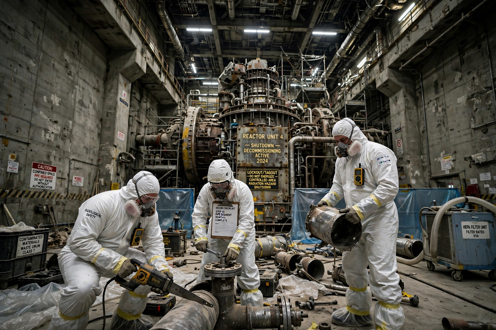

Nuclear decommissioning
| Nuclear decommissioning | |
|---|---|
 | |
| Strategies | Immediate dismantling; deferred dismantling (SAFSTOR); entombment |
| Regulators | IAEA guidance; national regulators (e.g. US NRC, UK ONR) |
Nuclear decommissioning is the process by which a nuclear facility is dismantled and its site decontaminated so that it no longer requires radiation protection measures. The process covers everything from defuelling and decontamination through demolition of structures to management of the resulting radioactive waste, and it ends when the site is released from regulatory control, often for unrestricted "greenfield" use.
Strategies
The IAEA recognises three principal strategies:
- Immediate dismantling — equipment and structures are removed or decontaminated soon after shutdown, allowing the expertise of operating staff to be used and the site to be released within years or a few decades.
- Deferred dismantling (SAFSTOR) — the facility is placed in a safe, monitored condition for several decades so that radioactivity decays before final dismantling, reducing worker dose and waste volumes.
- Entombment — radioactive structures are encased in concrete on site; this is rarely used for power reactors and generally not accepted by regulators for large facilities.
Process and costs
Decommissioning typically proceeds through characterisation of contamination, removal of fuel and operational waste, decontamination and dismantling of systems (often with remote cutting tools for the reactor pressure vessel and internals), demolition of buildings, and final site survey. Costs for a large power reactor are commonly in the hundreds of millions to billions of dollars, and utilities in many countries pay into dedicated decommissioning funds during the plant's operating life.
Notable programmes include the long-running decommissioning of the Windscale and Sellafield sites in the UK, the dismantling of Germany's reactors after its nuclear phase-out decisions, and the special challenges at damaged plants such as Three Mile Island Unit 2, Chernobyl, and Fukushima Daiichi, where removal of molten fuel debris remains an open technical problem.